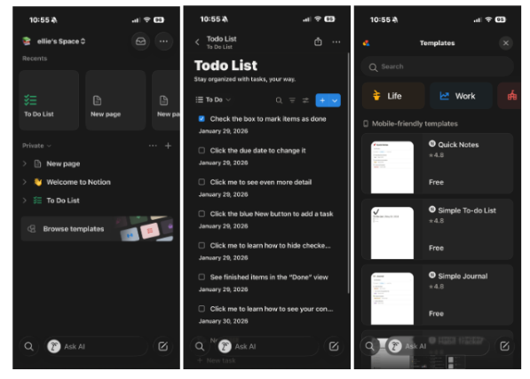
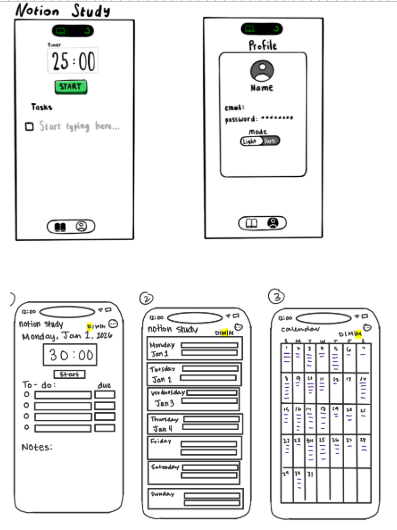
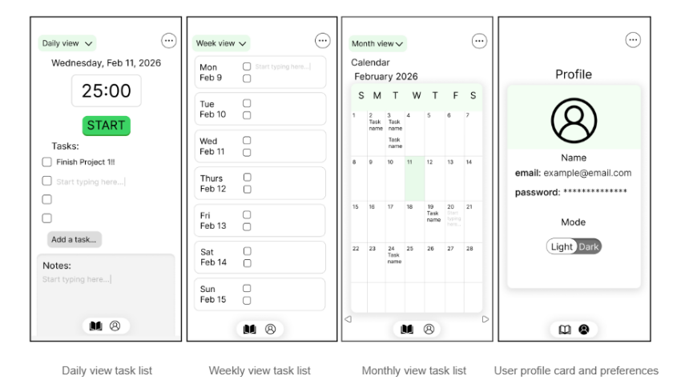

Redesigning Productivity App: Notion
Project Overview
This project investigates how people use productivity systems and why those systems often fall short of their intended goals. While there are plenty of tools designed to help users stay organized and focused on their tasks, people frequently find ways to manipulate and give themselves a false sense of personal productivity. The goal is to explore how these productivity tools shift how users think about and experience productivity. By examining and understanding the current space the project aims to reshape users' ideas about what it means to be productive.
Problem / Design Challenge

Productivity apps are overcomplicated and the amount of time it takes to get started takes away from the act of being productive in itself. Students spend more time trying to design their workspace and implement items into their calendar rather than actually working and being productive.
Your Role & Contribution
I served as a UX Researcher and Designer/Prototyper. While collaborating with my team members (Duru Battal, Effie Wang, and Elliana Estrada), I specifically worked on the user interview phase and was responsible for our journey maps, research, and prototyping/sketching for ideas to improve Notion. My role for this project was to solidify our solution as well as select the best case scenario and improvement for the productivity app.
Process & Supporting Evidence
Research & Synthesis
We conducted five interviews focusing on "the moment of overwhelm." We synthesized this into journey maps to identify that "emotional friction" was a bigger barrier than technical complexity.
Prototyping
Using Figma, we iterated from low-fidelity wireframes to a high-fidelity prototype that featured a pomodoro timer, which helps manage certain tasks by timing it as well as being able to add tasks to certain dates. This will be shown in a calendar or weekly view, whichever one the user chooses.

Key Insight & Turning Point
A major turning point occurred when we realized our initial design had too many buttons. We pivoted to a "One-Task" view, which became the core differentiator of our redesign. We found out from our research that the confusion in the app as well as the mental consumption of having an significantly overwhelming task list was a major issue.
Final Outcome

Notion Study is a simplified sister application designed to eliminate the "productivity theater" often associated with feature-heavy tools. By applying a subtraction-based design philosophy, the app removes the distracting customization options of the main Notion platform, allowing college students to transition from over-planning to meaningful task execution.
Core Features & Design Logic
The final high-fidelity prototype, developed in Figma, centers on three primary pillars to reduce cognitive overload:
Simplified Task Management: The interface is stripped of aesthetic complexity, offering only essential Daily, Weekly, and Monthly views. This reduces "decision fatigue" by presenting tasks in a clean, non-customizable format that prevents users from wasting time on system design.
Integrated Focus Continuity: A prominent Pomodoro focus timer is built directly into the task list. By connecting the timer to specific tasks, the app encourages "flow state" and ensures that the act of tracking time is tethered to actual progress rather than just "being busy".
Platform Integration with Minimalist Constraints: While the app syncs with the user's existing Notion data to ensure continuity, it operates as a minimalist standalone environment. It eliminates the "visual clutter" and complex templates that typically lead to procrastination under the guise of preparation.
Validation & Performance
The effectiveness of this "less is more" approach was confirmed through usability testing with college students:
High Efficiency: Users were able to navigate the interface and complete task-planning scenarios in an average of 38 seconds.
Reduced Cognitive Load: Feedback indicated that the subtraction of features successfully reestablished productivity as a process focused on task completion rather than aesthetic optimization.
Reflection
This project taught me the value of radical simplicity. It demonstrates my ability to take complex user data and strip away the noise to find a core solution. I want audiences to see me as a researcher who values the user's mental well-being as much as the application's functionality.